实例 - 速建武器&工具
—— 快速制作武器&工具的模型
json模型的一个很重要的用途就是自定义武器&工具，这为RPG、解密、恐怖等类型地图增色不少。使用Block2Json，能够将软件建模的过程略去，快速获得模型。
建模
无需软件建模，你所要做的只是在Minecraft中建造一个巨型雕塑。这不需要你拥有专业的建模能力，但需要一点创造力。
这边我就直接演示一份现成的Schematic：
你可以在【快速雕塑-获取方块文件-推荐网站】中找到合适的成品。
生成武器的模型
基本步骤
添加为损伤值模型（可选）
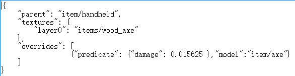

首先建造一个武器。
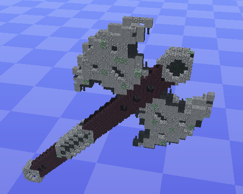进入MCEdit或者使用WorldEdit对它进行微调。
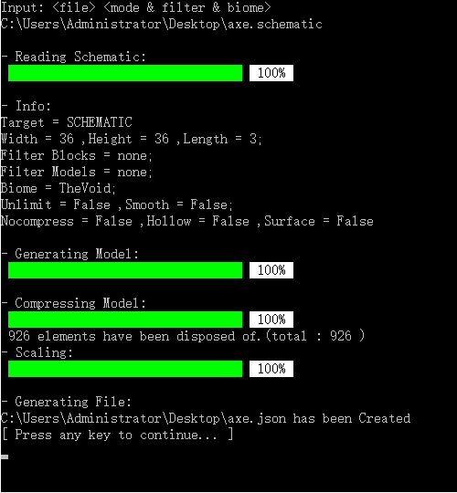进入Block2Json生成模型。
如果想将其作为"木斧"的损伤值模型，打开材质包model目录下的wooden_axe.json，修改overrides。
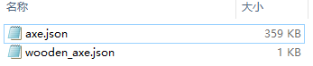将axe.json放到同级目录中。
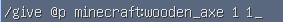进入游戏，通过指令给予物品。
对模型进行调整
基本步骤
游戏内效果
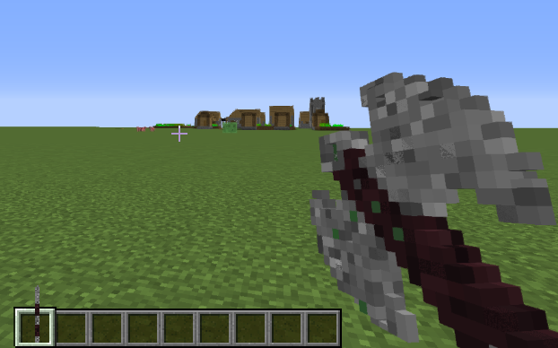
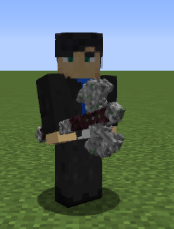
即便生成了Json模型，但它还不能作为一个武器，我们需要对其进行更多的调整。可以下载BlockBench进行模型的调整
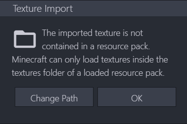进入BlockBench，导入模型，如果提示找不到材质，点击OK即可。
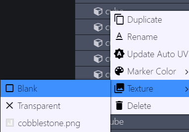接下来在左边的检视窗口全选模型的"Cube"，右键，把材质设为空白("Blank")（这样就能预览到丢失材质的模型的大致轮廓）
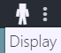来到上方的显示("Display")视窗，对模型显示进行调整
一开始它会是这样的：
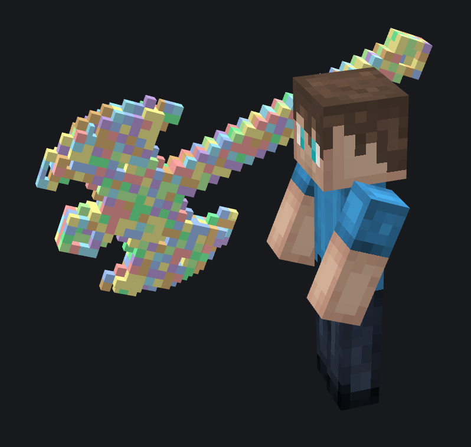调整参数让它正常：
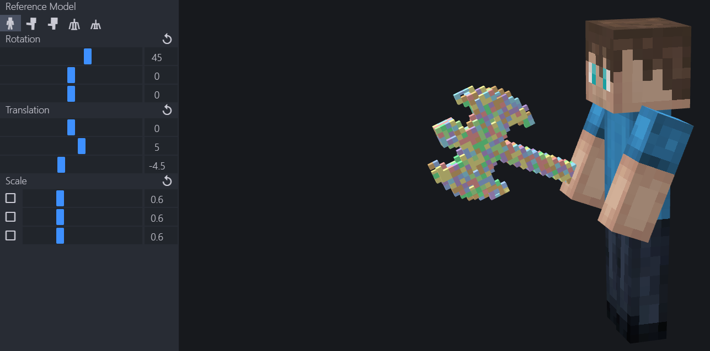同样，可以把这些参数应用到左手：
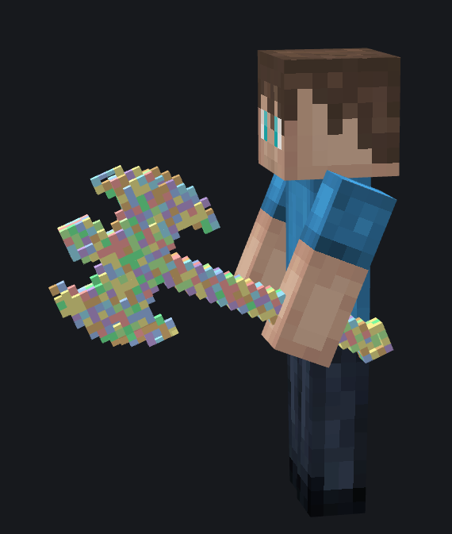接下来切换到第一人称：
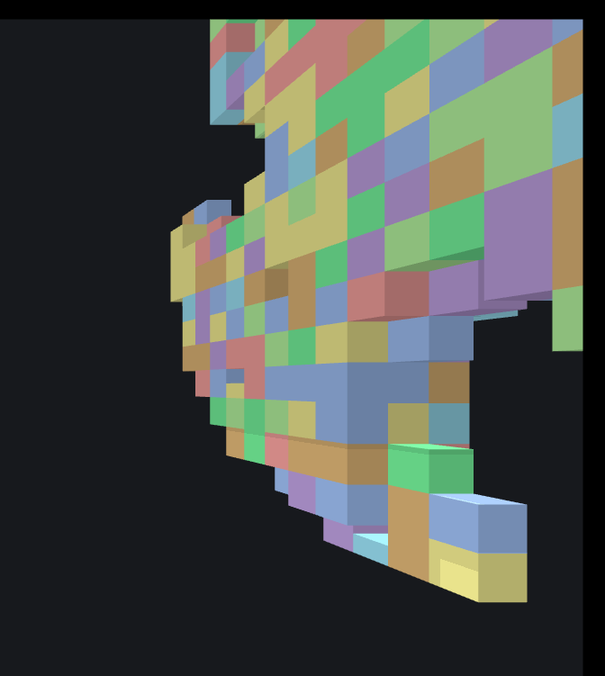调整过后：
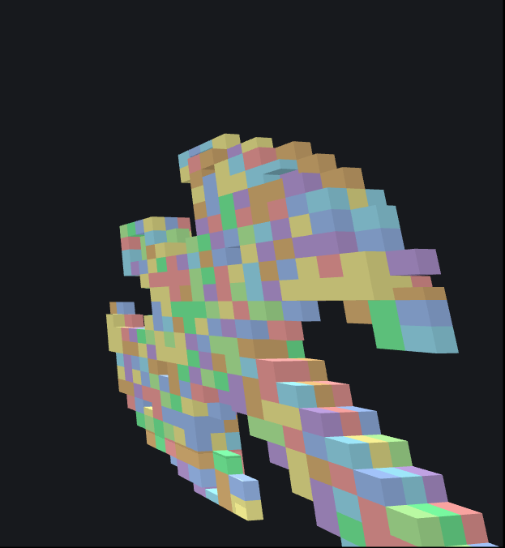你甚至可以来点好玩的，比如头部：
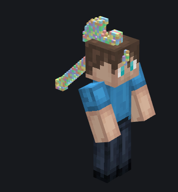调整完成后直接导出，不要替换掉原来的模型：
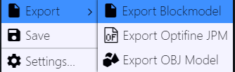点开新的模型文件，找到display这一段，复制：
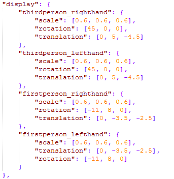将其粘贴到源模型：
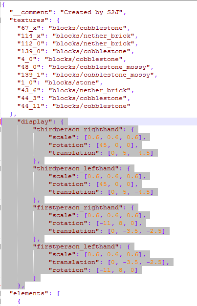然后可以把导出的新模型删掉了，别忘了保存修改后的源模型。
(如果想要修改第一人称物品栏中的材质，不需要再修改模型了，只需要替换textures中的材质)